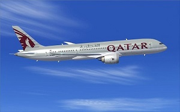

Qatar airways is the state-owned flag carrier of Qatar. Headquartered in the Qatar Airways Tower in Doha, the airline operates a hub-and-spoke network, linking over 150 international destinations across Africa, Central Asia, Europe, Far East, South Asia, Middle East, North America, South America and Oceania from its base at Hamad International Airport, using a fleet of more than 180 aircraft.
Qatar Airways was established on November 22, 1993 operations started on January 20, 1994. Amman was first served in May 1994.[11] In April 1995, the airline's CEO was the Sheikh Hamad Bin Ali Bin Jabor Al Thani who employed a staff of 75. By this time the fleet consisted of two Airbus A310s that served a route network including Abu Dhabi, Bangkok, Cairo, Dubai, Khartoum, Kuwait, London, Madras, Manila, Muscat, Osaka,[contradictory] Sharjah, Taipei, Tokyo and Trivandrum.[10] During 1995, two ex-All Nippon Airways Boeing 747s were bought from Boeing.[12][13] The airline acquired a second-hand Boeing 747SP from Air Mauritius in 1996.
 Services to Athens, Istanbul, Madras and Tunis were suspended in late 1996, whereas Calcutta and Muscat were removed from the route network in January and September 1997, respectively.[16] Flights to London were launched during 1997.[17] The airline also took delivery of two second-hand 231-seater Airbus A300-600R aircraft on lease from Ansett Worldwide Aviation Services (AWAS) during the year; they replaced two Boeing 747s. The entering of these two A300s into the fleet also marked the introduction of a new logo.[18] A third A300-600R joined the fleet shortly afterwards, also on lease from AWAS.[19] In July 1998 the carrier placed a firm order with Airbus for six Airbus A320s, slated for delivery between 2001 and 2005; it also took options for five more aircraft of the type.[20][21] Also in 1998, the carrier struck a deal with Singapore Aircraft Leasing Enterprise (SALE) for the lease of four Airbus A320s, with deliveries scheduled between February and April 1999;[22] these latter four aircraft were aimed at replacing the Boeing 727-200 Advanced fleet and to fill the capacity gap before the hand over of the first A320 from Airbus.[21] The airline took delivery of the first A320 powered by Aero Engines V2500 on lease from SALE in February 1999.[23]